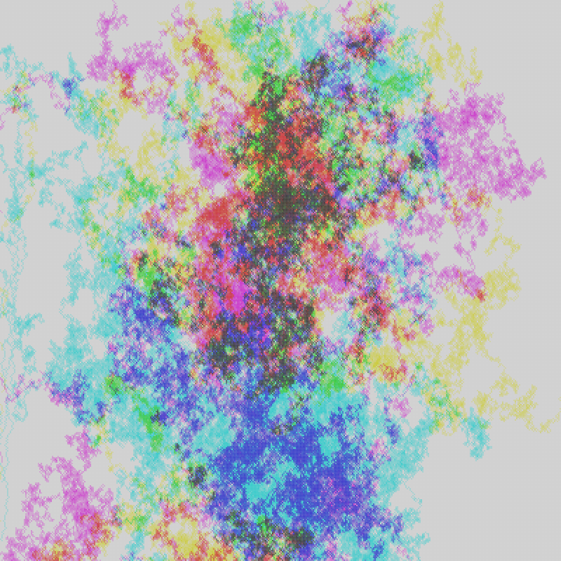
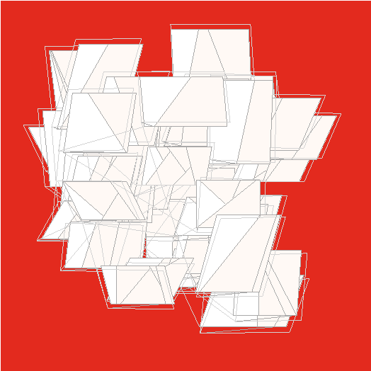

generative art - michael zhang
using code to make art
insta | email
Asteroids Mar 29th, 2022
Made with Python Turtle. code

- started by jotting down some ideas
- expanded on the concept of connected circles
- next, filled in the circles and went crazy with the colors
- realized that the scene looked a bit like space, so added shooting stars in the background
- finally, added a background, elements on top, then the foreground, concluding at iteration v250 (final product)
(had essays due for both ethics and business technology classes but decided to do this instead. oh well)
share
Neon Ants' Walk May 29th, 2022
Made with p5.js. code

- started with the concept of an "ant" walking through a grid and "flipping" colours
- went crazy with colors and # of ants but wanted to tone it down a bit
- added some gravity to the ant movement
- simplified output, ended up looking like a thundercloud
- decided to remove the "gravity" and tweak the # of ants and walk distance, ending with final version
(really like toying around with the concept of an "ant" becasue that gave a certain "life" to the output)
share
Weave Apr 23rd, 2022
Made with p5.js. code

- first time using p5.js - has a lot more to offer than Python Turtle!
- started with the concept of a multi-layered disk
- played around with space between disk lines
- added randomness in shading, color, and line width
- mellowed out the randomness because didn't want it to be too jarring
- tried using "ADD" blend mode to create some different effects
- changed coloring, adding details, and focused on a corner for final version
(final exam for Econ tomorrow and then that's a wrap for second year!)
share
Postcards Apr 11th, 2022
Made with Python Turtle. code

- started by playing around with a single vanishing point
- turned the squares into parallelograms
- added cores to the shapes and a bit of light pink shading
- stopped at v193, liked how it looks
(funny story: car wouldn't ignite the other day because I re-parked it three times in a row, depleting the battery. had to walk 40 mins home to get my booster - at least the weather was really nice)
share
Boxes Mar 27th, 2022
Made with Python Turtle. code

- began with the concept of a rectangular mesh
- started adding some variability
- then, tried using the fibonacci sequence to add predictable randomness (results were meh. i found that just pure randomness looked nicer) view
- started messing around with adding circular movements between each row and column lines
- went crazy shifting around the grid and playing with gradients in line width and color
- after 254 iterations, chose this final one as my favourite
(am using Python's Turtle module right now, but have plans to eventually transition to more complex ML algorithms)
share